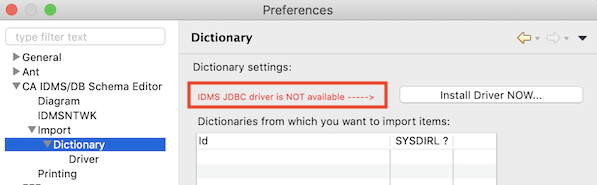

Dictionaries
In the Eclipse preferences dialog you can define 1 or more dictionaries that are
used to import schema diagrams directly from IDMS application dictionaries on your mainframe(s) using SQL Web Connect
(or the SQL Option) and IDMS Server. Make sure you have installed the IDMS JDBC driver and set up the mainframe part
(i.e. an application dictionary with a catalog component and IDMS Server exposing this outside of your mainframe) before
defining dictionaries in Eclipse. If you see the following message, first go ahead with the
installation of the JDBC driver into your Eclipse workbench :

Without a backing application dictionary on a mainframe, the definition of a dictionary for the diagram editor is
useless.
In your mainframe application dictionary/catalog, you will need to create a relational schema for IDMSNTWK as well; the
diagram editor will execute queries against this schema to retrieve the data it needs to generate diagrams. Note that
you can define several such (relational) schemas, each targeting a different dictionary (different dictionaries share
the same structure, which is described in the IDMSNTWK schema).
[TODO include definition of SYSDICT_APPLDICT schema]